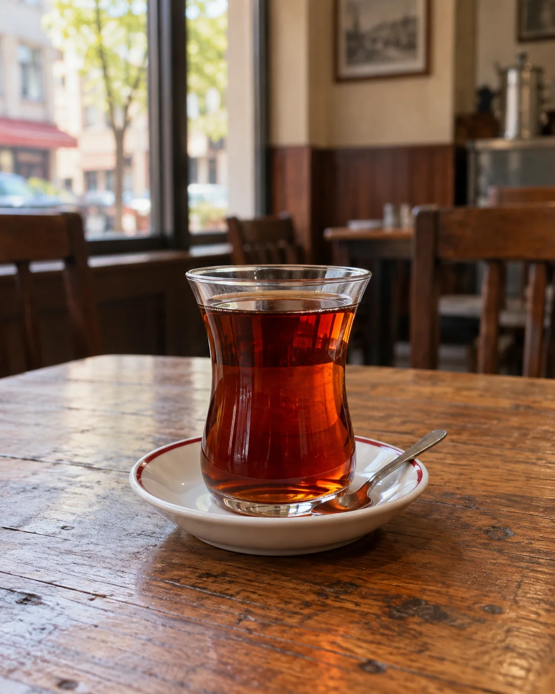

TOKAT’IN SICAK BULUŞMA NOKTASIBir çay koyduk.
Bir çay koyduk.
Sizi bekliyoruz.
Günün ilk çayından en tatlı molasına…
Sevdiğiniz lezzetler, sıcacık bir sohbet eşliğinde.

KÜÇÜK BİR MOLA, GÜZEL BİR GÜN.ÇAY HOUSE
♡
TOKAT
♡
TOKAT
Lezzetin ve keyfin
buluşma noktası.
Tokat’ta kahve molası, dostlarla uzun bir sohbet veya güne güzel bir başlangıç. Çay House’da her zaman size bir yer var.
♧ Kaliteli kahve♡ Samimi ortam◉ Ücretsiz Wi-Fi